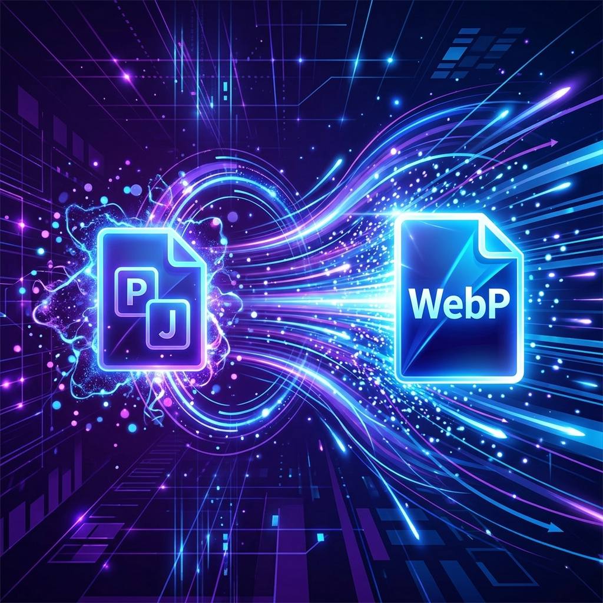

Mastering WebP: The Ultimate Guide to Image Optimization & Web Speed

Images are the lifeblood of a modern visual web experience. From detailed photography on blog posts to high-fidelity product cards on e-commerce storefronts, rich media drives engagement. However, they also represent the single heaviest component of modern page payloads. Heavy, unoptimized assets exhaust user mobile data plans, prolong page rendering times, and severely impact search engine discoverability. To solve this, Google developed WebP. In this guide, we dive into the mechanics of WebP compression and walk you through the ultimate checklist to master web media optimization.
1. Why WebP is the Web's Golden Standard
Before WebP, web developers faced a compromise: choose PNG for high-clarity graphic designs with transparency support but suffer massive file sizes, or choose JPEG for compression of complex photos but lose transparency features and introduce muddy blocky compression artifacts.
WebP bridges this divide by incorporating elements of the VP8 video compression standard. It supports features like lossy and lossless algorithms, an 8-bit alpha transparency channel, and animated playback—all within a single package. The results are mathematically dramatic:
- Lossless Conversion: WebP lossless files are on average 26% smaller than matching transparent PNG files.
- Lossy Conversion: WebP lossy graphics are 25% to 34% smaller than comparable high-quality JPEG images with equivalent structural similarity (SSIM) indexes.
2. Finding the Quality Slider Sweet Spot
When converting images to lossy WebP formats, you are presented with a compression factor quality scale from 0% to 100%. Selecting the right value is an exercise in balancing file size savings against visual representation.
The 80% to 85% Rule of Thumb: Industry standards prove that setting the compression factor to 80% or 85% yields the most optimal "sweet spot". Inside this bracket, the image sizing drops by up to 80% compared to original PNG files, while high-frequency details, sharp edges, and subtle gradients remain indistinguishable to the human eye. This is why PicsConvert sets the quality slider defaults to 85%.
If you drop below 70%, block-like coding structures and color-bleeding artifacts begin to emerge in high-contrast sections. Setting it above 90% significantly inflates the output file size for negligible gains in pixel clarity.
3. Lossy vs. Lossless WebP: Which to Choose?
WebP supports two fundamentally different encoding workflows. Choosing the correct algorithm is critical:
- Lossy WebP: Ideal for complex photography, realistic gradients, and hero screenshots. It achieves massive size reductions by permanently discarding high-frequency variations that are less perceptible to humans.
- Lossless WebP: Best for transparent logos, precise vector graphics, mathematical charts, and screenshot interfaces containing text. It preserves exact pixel data perfectly. However, because it preserves everything, the file size will be significantly larger than its lossy counterpart.
4. Preventing Cumulative Layout Shift (CLS)
Compressing images speeds up loading times, but how you write your frontend layout matters. Google's page ranking systems penalize pages that trigger layout shifts. When an image downloads and suddenly pops into view, pushing adjacent headings and content paragraphs downwards, it causes a layout shift.
To avoid this, always explicitly declare `width` and `height` dimensions on your HTML images. This acts as a reservation layout box in the browser render tree before the image binary downloads:
<img src="optimized-hero.webp"
width="800"
height="450"
alt="Mastering WebP cover graphic"
loading="lazy">
Defining dimensions does not break responsive CSS design! You can easily combine raw dimensions with matching responsive stylesheet definitions to lock in safety and fluid scalability simultaneously:
max-width: 100%;
height: auto;
}
5. Checklist for Production Web Image Optimization
Follow this checklist before launching graphic media on live production sites to guarantee peak speed performance and maximum SEO visibility:
- Convert to WebP in Bulk: Process raw media folders through PicsConvert's client-side sandboxed converter. All directory mapping structures remain preserved, saving hours of manual adjustments.
- Define Custom Max Boundaries: E-commerce cards rarely require 4K graphics. Use PicsConvert's proportional aspect ratio lock to resize images to maximum dimensions matching the viewport containers (e.g. 1920px for hero background, 800px for blog body, 400px for product lists).
- Define Image Alt Text: Always include contextual descriptions containing target keywords to help search crawlers index your graphics for organic referral traffic.
- Implement Native Lazy Loading: Attach the `loading="lazy"` attribute to all media below the viewport fold to keep the initial page weight light and the Largest Contentful Paint (LCP) exceptionally fast.
Conclusion
Moving from traditional bulky PNGs and legacy JPEGs to optimized next-generation WebP files is the single most effective technical change you can make to speed up your website. By taking advantage of local sandboxed conversion platforms like PicsConvert, you achieve instantaneous compression times in total security. Apply these rules, check your Lighthouse speed rankings, and deliver blazing-fast visual content today.